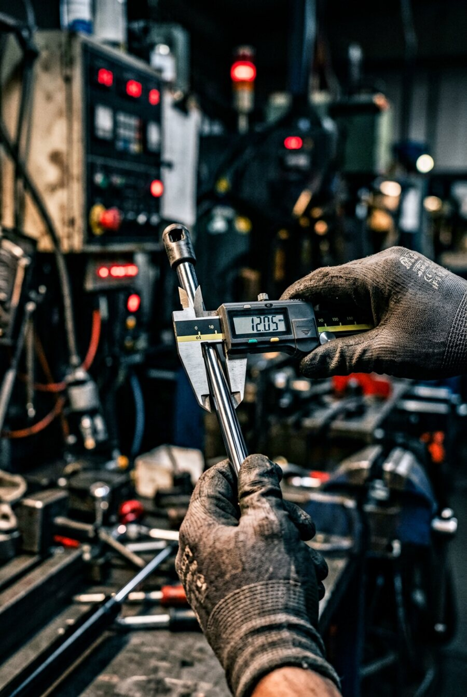
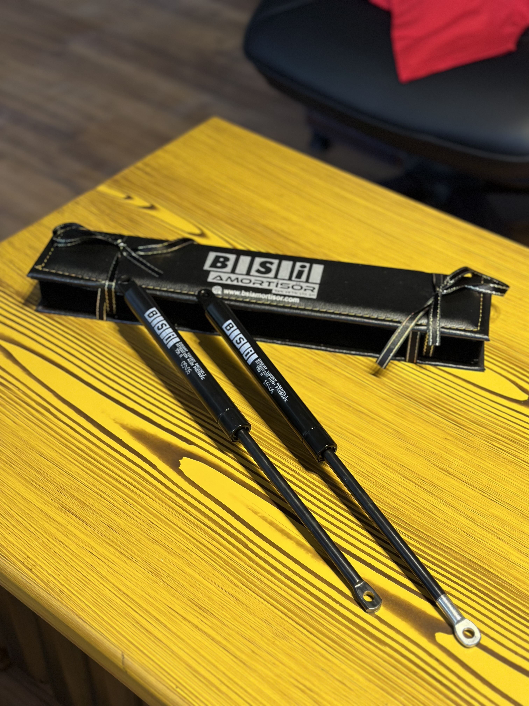
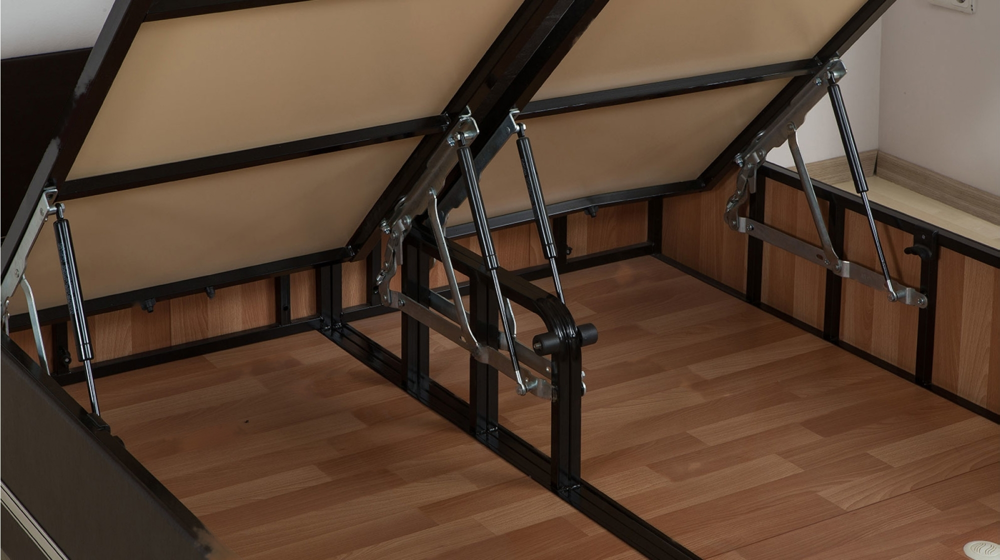
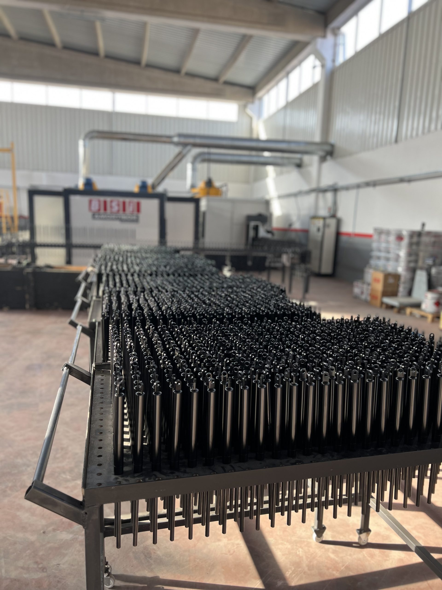
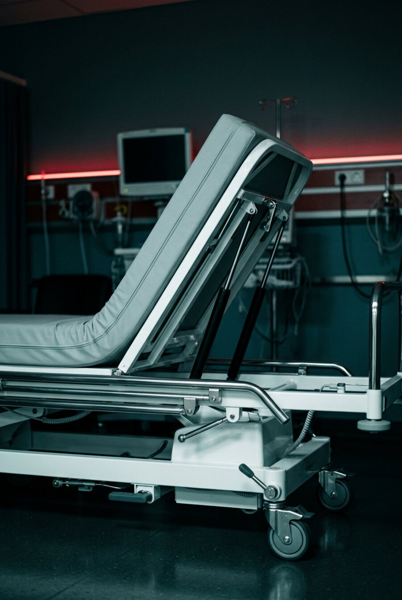
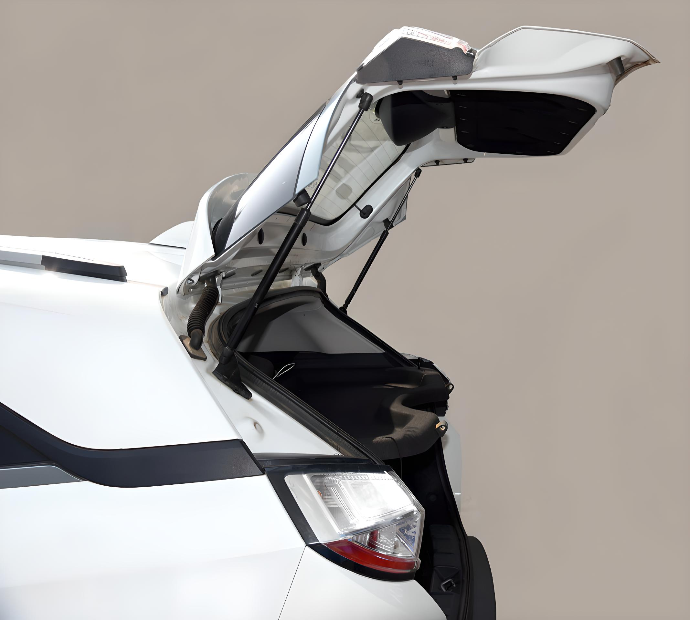
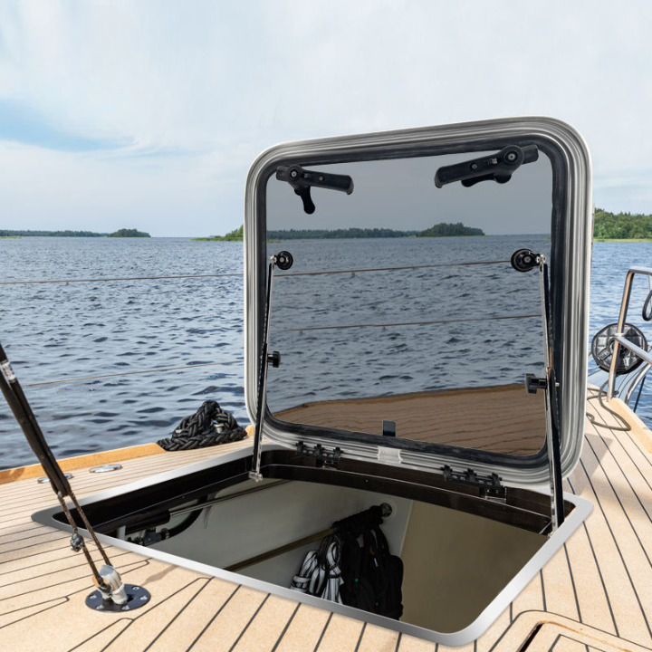
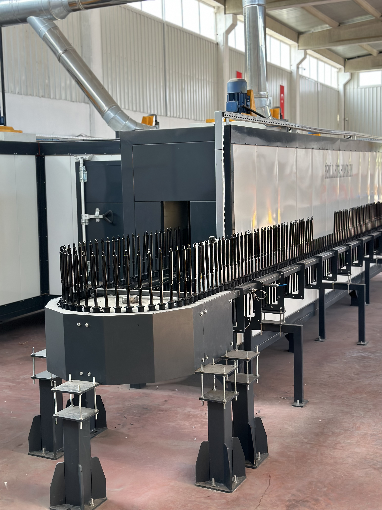
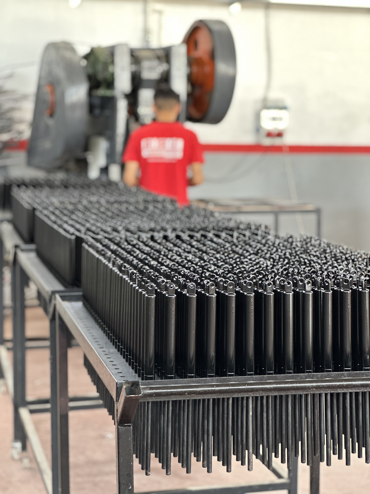

Aksesuar

Braketler
Küresel başlık, çatal başlık, pim, klips ve montaj braketleri; pistonla birlikte test edilmiş uyum.

Standart ölçülerde seri üretim, projelerinizde ise numune veya teknik resme göre kişiye özel imalat. Aşağıdaki ürün gruplarından herhangi biri için teknik destek alabilirsiniz.
Yataklı bazaların yumuşak açılıp kapanmasını sağlayan, ev ve otel mobilyalarında uzun yıllar sorunsuz çalışan gazlı amortisörler.
Kontrollü açılma sayesinde yatak kaldırma sırasında ani düşmeler engellenir; kullanıcı için güvenli, üretici için montajı kolay bir çözümdür.

| Teknik Değer | Standart Aralık | Not |
|---|---|---|
| Kuvvet | 50 N – 1300 N | Uygulamaya göre özel kuvvet üretilebilir |
| Gövde çapı | Ø 21 mm | Talep üzerine diğer ölçüler |
| Strok | 30 – 140 mm | Mekanizma ölçüsüne göre |
| Çalışma sıcaklığı | -20 °C / +80 °C | Özel uygulamalar için genişletilebilir |
| Yüzey | Krom kaplı mil, boyalı gövde | Paslanmaz seçenek mevcut |

Sabit kuvvetli, ayarlanabilir ve kilitli tip seçenekleriyle makine kapakları, paneller, kabinler ve özel ekipmanlar için gaz yayları.
Yüksek basınçlı azot gazı ile çalışan sistemimiz, yayın ömrü boyunca kuvvet değerini korur. Piston mili sert krom kaplamadır; conta seti düşük sürtünmeli malzemeden seçilir.
Hasta yatakları, sedyeler, muayene koltukları ve rehabilitasyon ekipmanları için güvenli ve hijyenik piston çözümleri.
Sıvı geçirmez yüzey, kolay temizlenebilirlik ve düşük sürtünmeli hareket sağlık kurumlarının beklentileri doğrultusunda tasarlanır. Gerektiğinde kilitli tip pistonlarla istenen pozisyonda sabitleme yapılabilir.


Bagaj kapağı, kaput, arka kapı ve ticari araç üst yapıları için yüksek dayanımlı gazlı amortisörler.
Sıcaklık farklarına ve titreşime dayanıklı yapı; ağır kapaklarda dahi kontrollü açılma sağlar. OEM ve yedek parça projeleri için ölçüye özel üretim yapılır.
Tuzlu su ve neme maruz kalan ortamlarda çalışan hatch, kapak ve oturma grubu mekanizmaları için paslanmaz çözümler.
316L paslanmaz çelik gövde ve bağlantı elemanları ile deniz ortamına uygun, uzun ömürlü pistonlar üretiyoruz.

Pistonlarınızı tamamlayan aksesuarları ve kaplama hizmetlerini de aynı tesisten sağlıyoruz; böylece tek tedarikçiyle çalışırsınız.

Küresel başlık, çatal başlık, pim, klips ve montaj braketleri; pistonla birlikte test edilmiş uyum.

Krom kaplama, boya, astar ve pasivasyon uygulamaları; korozyon dayanımı için doğru kaplama seçimi.

Teknik resim veya numuneden yola çıkarak ölçü, kuvvet ve bağlantı tipi size özel üretilir.
Uygulamanızın çalışma koşullarına göre malzeme ve kaplama önerisi yapıyoruz. Aşağıdaki tablo, en sık tercih edilen kombinasyonları gösterir.
| Ortam | Önerilen Gövde / Kaplama |
|---|---|
| Kapalı mekân · mobilya | Boyalı gövde · krom kaplı mil |
| Nemli / dış ortam | Krom kaplama veya paslanmaz |
| Tuzlu su · deniz | 316L paslanmaz |
| Medikal · hijyen | Paslanmaz veya beyaz kaplama |
| Yüksek sıcaklık | Özel conta seti + yüksek sıcaklık yağı |
Numune, teknik resim veya sadece kullanım amacınızı iletmeniz yeterli. Teknik ekibimiz en kısa sürede dönüş yapar.